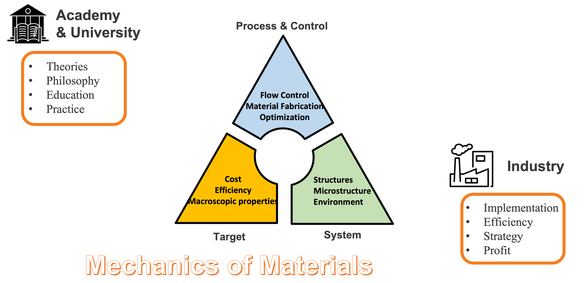

우리 연구실은 고급 전산 역학 지식과 스킬을 이용하여 산업계의 각종 공학 문제에 도전하고, 이 과정에서 미래 세대 기계공학도를 양성합니다.
We solve engineering problems in our daily life and industry using advanced computational techniques.

News
09. 01. 2023: Prof. Kim is appointed as an assistant profossor in Hongik University